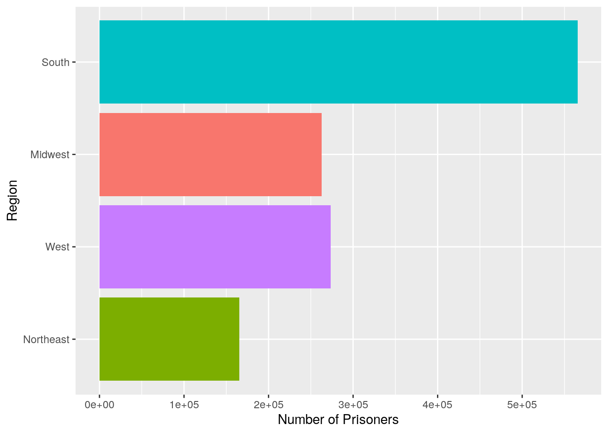
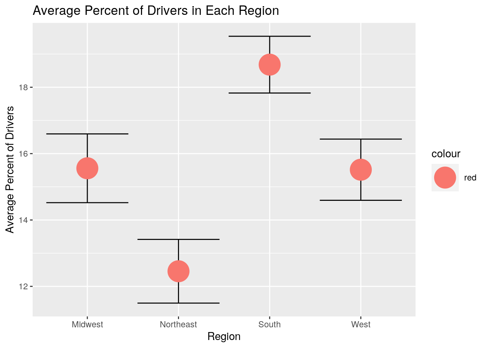
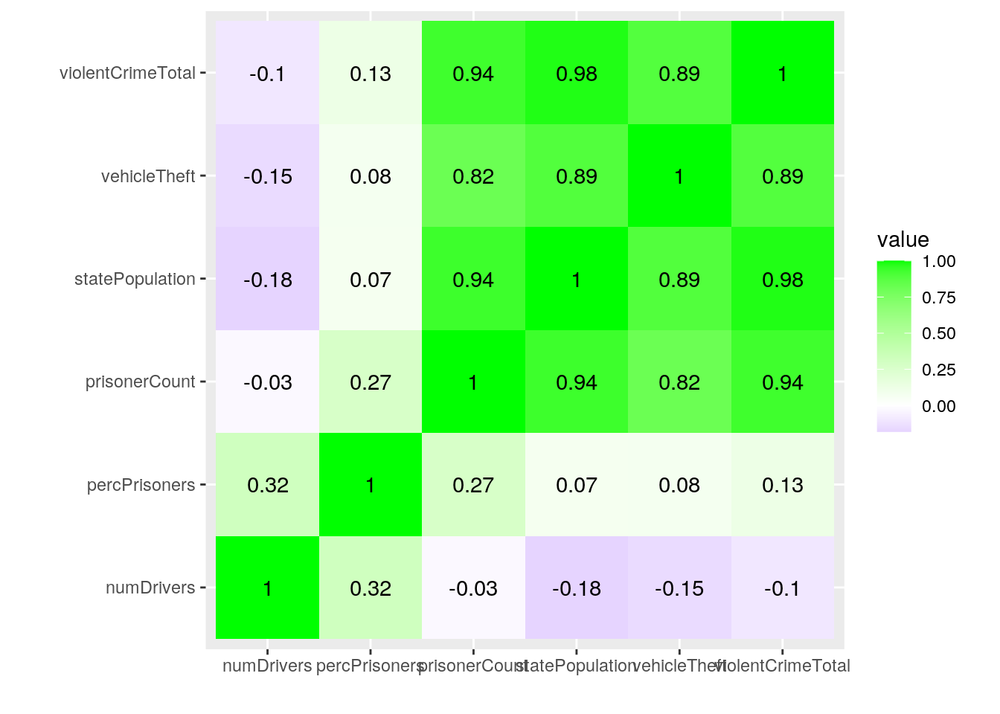
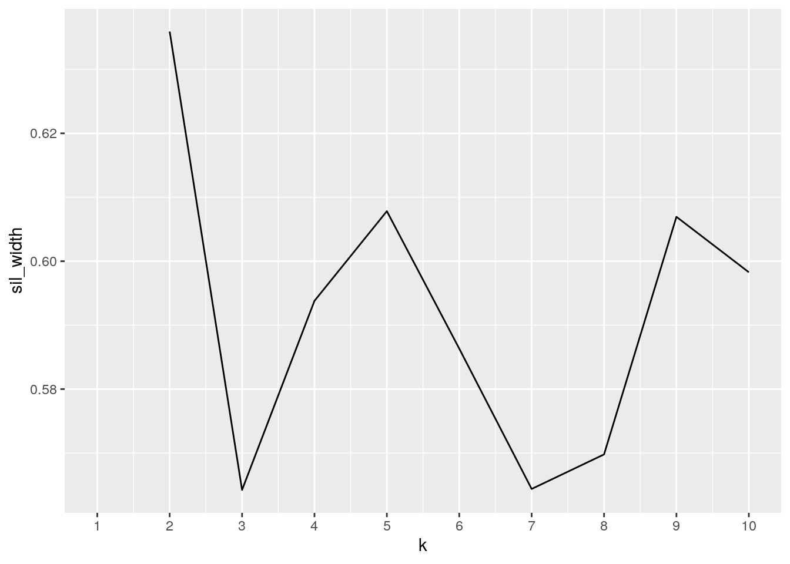
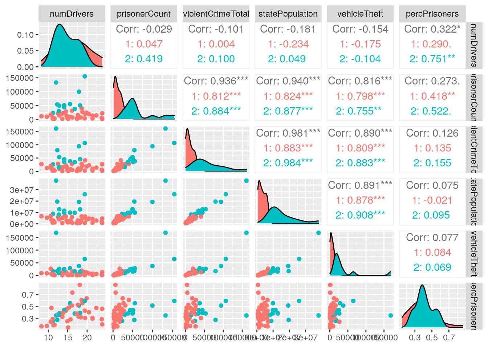
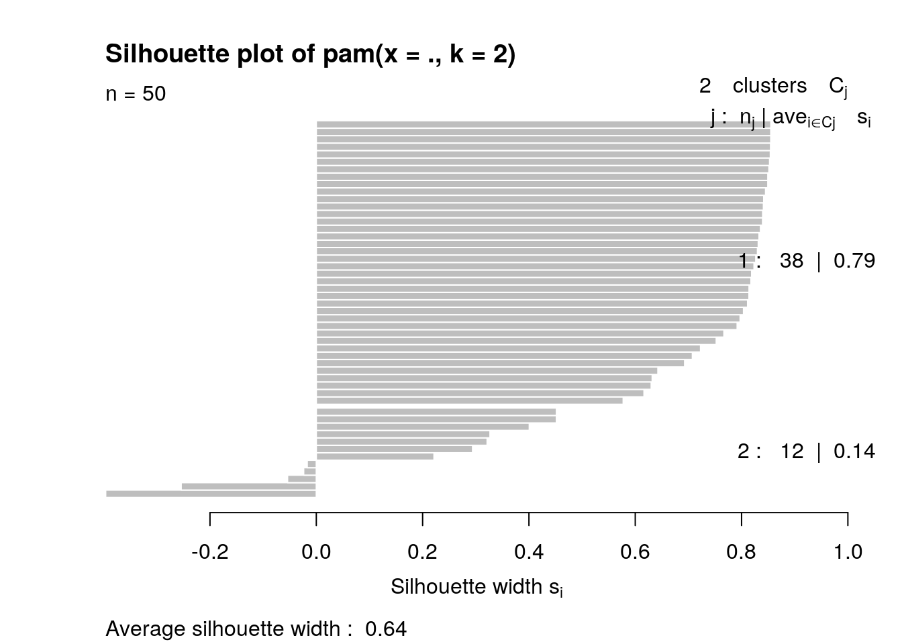
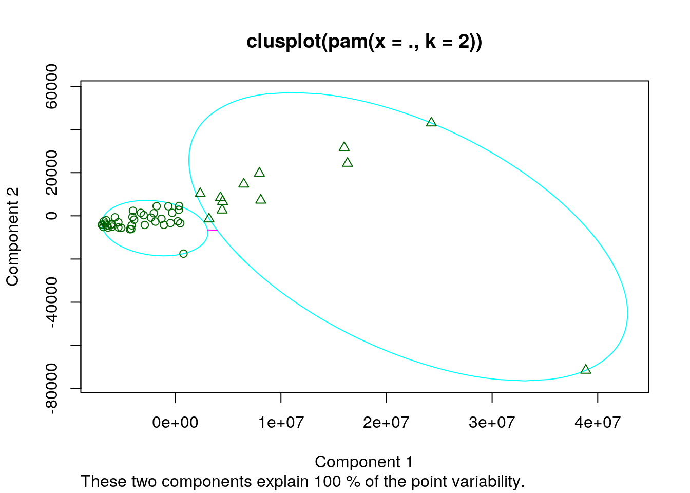

I chose to study three data sets on crime rates, bad drivers, and state data. My bad drivers data set contains data on the percentage of bad drivers in each state a long with statistics such as if alcohol is involved or phone calls, as well as how much insurance premiums were raised. My crime rates data set contains data on the amount of prisoners a state has along with the times of crimes that were committed. Lastly, my state information data set classifies states into specific regions and divisions. I wanted to see if there was any statistical correlations or relationships between the amount of bad drivers and crime. I added a data set on state data to see if there were any correlations or relationships with the region or division the crimes or bad drivers occurred in. I expect to an increased number of bad drivers in the same areas and states as those with high crime rates. I don’t expect to see any specific correlations between regions and crime rates or bad drivers.
pivot_wider()/spread() and then tidy them again with pivot_longer/gather() to demonstrate your use of the functions. It’s fine to wait until you have your descriptives to use these functions (e.g., you might want to pivot_wider() to rearrange the data to make your descriptive statistics easier to look at); it’s fine long as you use them at least once!library(fivethirtyeight)
library(tidyverse)
bad_drivers <- bad_drivers
crime <- read.csv("crime_and_incarceration_by_state.csv", header = TRUE)
state_info <- state_infoI imported each of my data sets. Two of my data sets, bad_drivers and state_info, were imported from a library called fivethirtyeight which allowed me to directly assign them to variables. I had to import my last data set, crime, from a CSV file in which, I downloaded off the internet.
data_set <- bad_drivers %>% full_join(crime, by = c(state = "jurisdiction"))
data_set <- data_set %>% full_join(state_info, by = c("state"))
data_set <- data_set %>% filter(!is.na(prisoner_count))
data_set <- data_set %>% rename(numDrivers = num_drivers, prisonerCount = prisoner_count,
violentCrimeTotal = violent_crime_total, statePopulation = state_population,
vehicleTheft = vehicle_theft)I first added the crime data set to the bad_drivers data set using a full join by the variables “state” and “jurisdiction” and saved it in to a new data set. I then added the state_info data set into my newly formed data set. I also filtered out any N/A values during this time and renamed the variables to make them more manageable in future functions.
data_set <- data_set %>% mutate(percPrisoners = (prisonerCount/statePopulation) *
100)
data_set <- data_set %>% select(state, numDrivers, prisonerCount,
violentCrimeTotal, statePopulation, vehicleTheft, region,
division, percPrisoners)
data_set %>% summarize_at(c("numDrivers", "prisonerCount"), mean,
na.rm = T)## # A tibble: 1 x 2
## numDrivers prisonerCount
## <dbl> <dbl>
## 1 16.0 25340.data_set %>% group_by(region) %>% select_if(is.numeric) %>% summarize_all(mean,
na.rm = T)## # A tibble: 4 x 7
## region numDrivers prisonerCount violentCrimeTot… statePopulation vehicleTheft
## <chr> <dbl> <dbl> <dbl> <dbl> <dbl>
## 1 Midwe… 15.6 21905. 19953 5610119. 11251.
## 2 North… 12.5 18361. 21766. 6196866. 7752.
## 3 South 18.7 35339 30578. 7288785. 15473.
## 4 West 15.5 21036. 21894. 5655883. 20552.
## # … with 1 more variable: percPrisoners <dbl>data_set %>% filter(numDrivers > 15.8 & prisonerCount > 25340) %>%
arrange(desc(numDrivers), desc(prisonerCount))## # A tibble: 7 x 9
## state numDrivers prisonerCount violentCrimeTot… statePopulation vehicleTheft
## <chr> <dbl> <int> <int> <int> <int>
## 1 Texas 19.4 155195 106475 26060796 65032
## 2 Alab… 18.8 26768 21693 4817528 9874
## 3 Ariz… 18.6 40013 28077 6551149 18982
## 4 Penn… 18.2 50228 45384 12764475 15113
## 5 Flor… 17.9 99835 94087 19320749 37330
## 6 Nort… 16.8 37378 34464 9748364 16120
## 7 Miss… 16.1 31205 27189 6024522 16332
## # … with 3 more variables: region <chr>, division <chr>, percPrisoners <dbl>data_set %>% select(-region) %>% select(-state) %>% select(-division) %>%
summarise_all(list(Min = min, Mean = mean, Max = max, Sd = sd,
Median = median), na.rm = T) %>% pivot_longer(contains("_")) %>%
arrange(name) %>% separate(name, into = c("Numeric", "Statistics")) %>%
pivot_wider(names_from = "Statistics", values_from = "value") %>%
rename(`Standard Deviation` = "Sd", Data = "Numeric") %>%
mutate(Range = Max - Min)## # A tibble: 6 x 7
## Data Max Mean Median Min `Standard Deviat… Range
## <chr> <dbl> <dbl> <dbl> <dbl> <dbl> <dbl>
## 1 numDrivers 2.39e+1 1.60e+1 1.56e+1 8.20e+0 3.91 1.57e+1
## 2 percPrison… 8.64e-1 3.93e-1 3.82e-1 1.49e-1 0.147 7.15e-1
## 3 prisonerCo… 1.55e+5 2.53e+4 1.64e+4 1.41e+3 31104. 1.54e+5
## 4 statePopul… 3.80e+7 6.26e+6 4.49e+6 5.77e+5 6996879. 3.74e+7
## 5 vehicleThe… 1.69e+5 1.44e+4 8.79e+3 4.60e+2 25017. 1.68e+5
## 6 violentCri… 1.61e+5 2.42e+4 1.58e+4 8.91e+2 30155. 1.60e+5data_set %>% select(-state) %>% select(-division) %>% group_by(region) %>%
summarise_all(list(Min = min, Mean = mean, Max = max, Sd = sd,
Median = median), na.rm = T) %>% pivot_longer(contains("_")) %>%
arrange(name) %>% pivot_wider(names_from = "name", values_from = "value")## # A tibble: 4 x 31
## region numDrivers_Max numDrivers_Mean numDrivers_Medi… numDrivers_Min
## <chr> <dbl> <dbl> <dbl> <dbl>
## 1 Midwe… 23.9 15.6 14.7 9.6
## 2 North… 18.2 12.5 11.6 8.2
## 3 South 23.9 18.7 19.1 12.5
## 4 West 21.4 15.5 15.3 10.6
## # … with 26 more variables: numDrivers_Sd <dbl>, percPrisoners_Max <dbl>,
## # percPrisoners_Mean <dbl>, percPrisoners_Median <dbl>,
## # percPrisoners_Min <dbl>, percPrisoners_Sd <dbl>, prisonerCount_Max <dbl>,
## # prisonerCount_Mean <dbl>, prisonerCount_Median <dbl>,
## # prisonerCount_Min <dbl>, prisonerCount_Sd <dbl>, statePopulation_Max <dbl>,
## # statePopulation_Mean <dbl>, statePopulation_Median <dbl>,
## # statePopulation_Min <dbl>, statePopulation_Sd <dbl>,
## # vehicleTheft_Max <dbl>, vehicleTheft_Mean <dbl>, vehicleTheft_Median <dbl>,
## # vehicleTheft_Min <dbl>, vehicleTheft_Sd <dbl>, violentCrimeTotal_Max <dbl>,
## # violentCrimeTotal_Mean <dbl>, violentCrimeTotal_Median <dbl>,
## # violentCrimeTotal_Min <dbl>, violentCrimeTotal_Sd <dbl>data_set %>% select(-state) %>% group_by(region, division) %>%
summarise_all(list(Min = min, Mean = mean, Max = max, Sd = sd,
Median = median), na.rm = T) %>% pivot_longer(contains("_")) %>%
arrange(name) %>% pivot_wider(names_from = "name", values_from = "value")## # A tibble: 9 x 32
## # Groups: region [4]
## region division numDrivers_Max numDrivers_Mean numDrivers_Medi… numDrivers_Min
## <chr> <chr> <dbl> <dbl> <dbl> <dbl>
## 1 Midwe… East No… 14.5 13.9 14.1 12.8
## 2 Midwe… West No… 23.9 16.8 16.1 9.6
## 3 North… Mid-Atl… 18.2 13.9 12.3 11.2
## 4 North… New Eng… 15.1 11.7 11.4 8.2
## 5 South East So… 21.4 19.3 19.2 17.6
## 6 South South A… 23.9 17.4 16.5 12.5
## 7 South West So… 22.4 20.5 20.2 19.4
## 8 West Mountain 21.4 16.3 16.4 11.3
## 9 West Pacific 18.1 14.2 12.8 10.6
## # … with 26 more variables: numDrivers_Sd <dbl>, percPrisoners_Max <dbl>,
## # percPrisoners_Mean <dbl>, percPrisoners_Median <dbl>,
## # percPrisoners_Min <dbl>, percPrisoners_Sd <dbl>, prisonerCount_Max <dbl>,
## # prisonerCount_Mean <dbl>, prisonerCount_Median <dbl>,
## # prisonerCount_Min <dbl>, prisonerCount_Sd <dbl>, statePopulation_Max <dbl>,
## # statePopulation_Mean <dbl>, statePopulation_Median <dbl>,
## # statePopulation_Min <dbl>, statePopulation_Sd <dbl>,
## # vehicleTheft_Max <dbl>, vehicleTheft_Mean <dbl>, vehicleTheft_Median <dbl>,
## # vehicleTheft_Min <dbl>, vehicleTheft_Sd <dbl>, violentCrimeTotal_Max <dbl>,
## # violentCrimeTotal_Mean <dbl>, violentCrimeTotal_Median <dbl>,
## # violentCrimeTotal_Min <dbl>, violentCrimeTotal_Sd <dbl>First, I used the dplyr select function to obtain the variables I wanted to look at from my compiled data set. Then I used the dplyr summarize function to find the average percentage of bad drivers per state and the average prisoner count in each state which was 15.988 and 25,339.96, respectively. After, grouped the data set by region and found the average amount of each variable by region. I also was able to filter the states by those with an average percentage above the mean and an average prisoner count above the mean as well using the dplyr filter function and arranged them in descending order using the arrange function. I found that Texas, Alabama, and Arizona were the top three states with the most amount of bad drivers and prisoners, respectively. Finally, I made a new variable of the percentage prisoners (percPrisoners) by dividing the amount of prisoners by the state population using the mutate function.
I computed summary statistics for all of my variables using the summarizeall function. I had to pivot my data in order to display it in a tidy and readable table. I repeated this process two more times, in which the first I grouped the data by region to find the summary statistics for each region for each variable. The second time I grouped the data by division and region to find the summary statistic for each region and division for each variable.
data_set %>% ggplot(aes(x = reorder(region, prisonerCount), y = prisonerCount,
fill = region)) + geom_bar(stat = "identity") + coord_flip() +
theme(legend.position = "none") + scale_y_continuous("Number of Prisoners",
breaks = seq(0, 5e+05, 1e+05)) + xlab("Region")
data_set %>% ggplot(aes(x = region, y = numDrivers, color = "red")) +
geom_errorbar(stat = "summary", fun.data = mean_se, color = "black") +
geom_point(stat = "summary", size = 10) + xlab("Region") +
ggtitle("Average Percent of Drivers in Each Region") + scale_y_continuous("Average Percent of Drivers")
data_set %>% select_if(is.numeric) %>% cor %>% as.data.frame %>%
rownames_to_column %>% pivot_longer(-1) %>% ggplot(aes(rowname,
name, fill = value)) + geom_tile() + geom_text(aes(label = round(value,
2))) + xlab("") + ylab("") + coord_fixed() + scale_fill_gradient2(low = "blue",
mid = "white", high = "green") First, I plotted the number of prisoners in each region and found that the south has the greatest number of prisoners. Then, I made a plot of the average percent of bad drivers with error bars and found that the South has the highest average percentage of bad drivers, while the Northeast has the lowest percentage of bad drivers. Finally, I made a heat map showing all of the correlations between each of the variables. There were significant positive correlations between all combinations of the four variables, violentCrimeTotal, vehicleTheft, statePopulation, and prisonerCount.
library(cluster)
library(GGally)
pam_dat <- data_set %>% select(-state, -region, -division)
sil_width <- vector()
for (i in 2:10) {
pam_fit <- pam(pam_dat, k = i)
sil_width[i] <- pam_fit$silinfo$avg.width
}
ggplot() + geom_line(aes(x = 1:10, y = sil_width)) + scale_x_continuous(name = "k",
breaks = 1:10)
pam1 <- data_set %>% pam(k = 2)
data_set %>% mutate(cluster = as.factor(pam1$clustering)) %>%
ggpairs(columns = c("numDrivers", "prisonerCount", "violentCrimeTotal",
"statePopulation", "vehicleTheft", "percPrisoners"),
aes(color = cluster))
plot(pam1, which = 2)
plot(pam1, which = 1) I ran a PAM cluster on my data set and found that the largest average silhouette width was found when there were two clusters. Then I used ggpairs to visualize the pairwise combination of all the variables. I found there were strong positive correlations between all combinations of violentCrimeTotal, statePopulation, and vehicleTheft. There was also a significant positive correlation between percPrisoners and numDrivers. After I graphed out the silhouette widths for two clusters and found that there was a strong structure within the first cluster with an average width of 0.79, but no substantial structure found in the second cluster with an average width of 0.14. Finally, I plotted out the clusters for visualization.